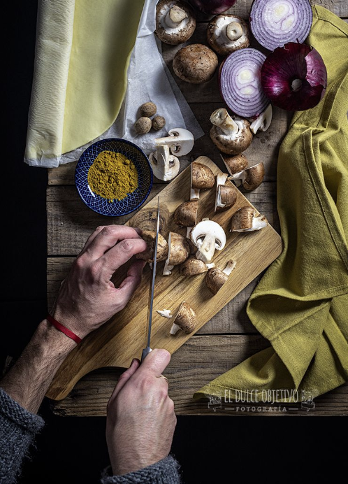

QUICHE VEGANA DE PORTOBELLO
Ingredientes:
- Masa quebrada para veganos.
- 2 cebollas moradas.
- 400 gr. de Portobellos o champiñones.
- 400 gr de leche de coco (una lata)
- 200 gr. de tofu de frutos secos (también de Lidl)
- 1 cucharada de Curry en polvo (esto a gusto del consumidor)
- Sal.
- Pimienta.
Preparación:
- Limpiamos y troceamos nuestros champiñones. Lo podemos hacer en laminas, pero yo los he cortado en 4, para que queden trocitos más grandes. Como sabemos, luego disminuye el tamaño cuando pierden agua. Reservamos.
- Cortamos la cebolla morada en juliana.
- Ponemos en una sartén, grande un poco de aceite y pochamos la cebolla con un poco de sal.
- Cuando esté pochada, añadimos los champiñones salpimentamos un poco y rehogamos bien.
- Mientras, cortamos a taquitos el tofu, y del mismo modo, lo pasamos a la sartén para darle unas vueltas.
- Acto seguido, con todo cocinado, ponemos la leche de coco, el curry, y movemos bien para integrar y ligar todos los ingredientes.
- Es el momento de probar para rectificar de sal y pimienta, incluso de curry, si vemos que nos hemos quedado cortos.
- Cocinaremos a fuego medio, hasta que la leche de coco vaya espesando y nos quede una mezcla consistente.
- Cuando lo tengamos listo, precalentamos el horno con calor arriba y abajo a 220º.
- En un molde de cristal redondo para Quiché, extendemos nuestra masa, que habremos sacado unos 5 minutos antes del frigo, y la colocamos, pegando los bordes a los laterales de nuestro molde.
- Ponemos nuestro relleno en el interior, y extendemos para que quede uniforme con la ayuda de una cuchara o lengüeta.
- Si ha sobrado masa, con la pinta de un cuchillo bien afilado, quitamos el excedente, de este modo se nos quedará nivelada al molde.
- Metemos en horno y horneamos entre 30 y 40 minutos.
- Una vez este cocina, sacamos y a disfrutar.
